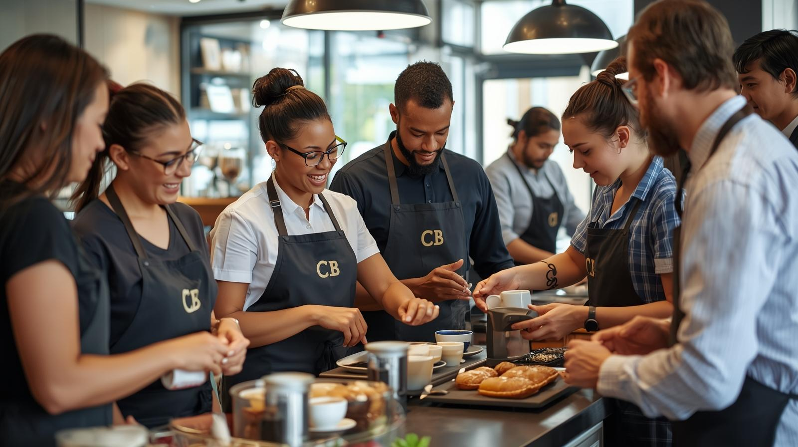

About CoffeeBox
CoffeeBox grew from the Coffeeberry brand at Cascades Mall and pioneered KwaZulu-Natal’s first drive-thru coffee shop at Athlone Circle.
We are a family-run business, integrated into the Pietermaritzburg community, combining convenience with quality.
Our Mission
Deliver premium coffee and food quickly, while supporting community development.
Our Vision
To become South Africa’s most iconic drive-through coffee brand, rooted in quality and social responsibility.